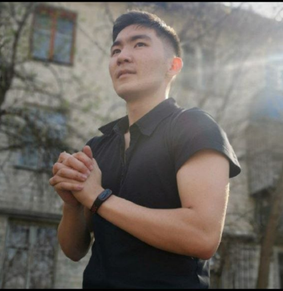
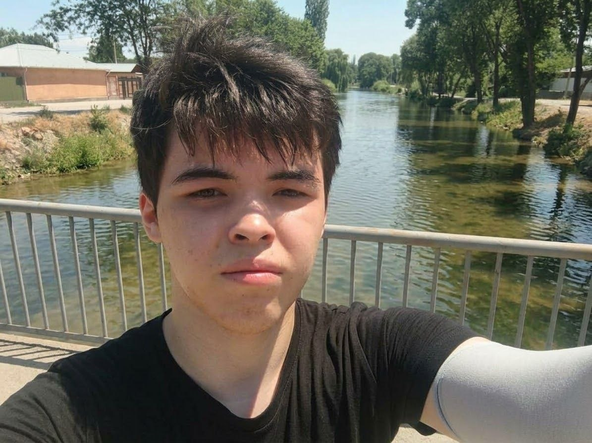
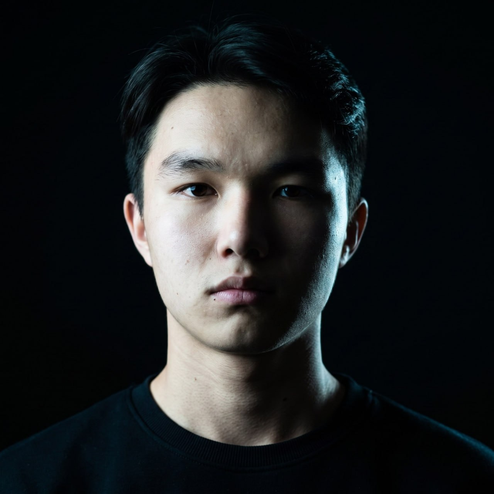
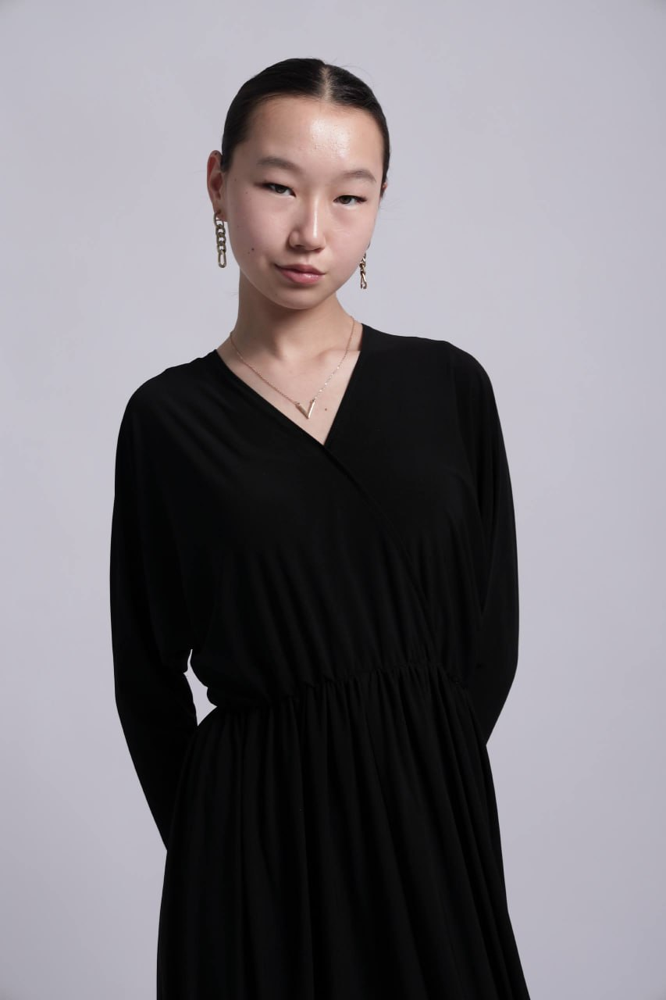
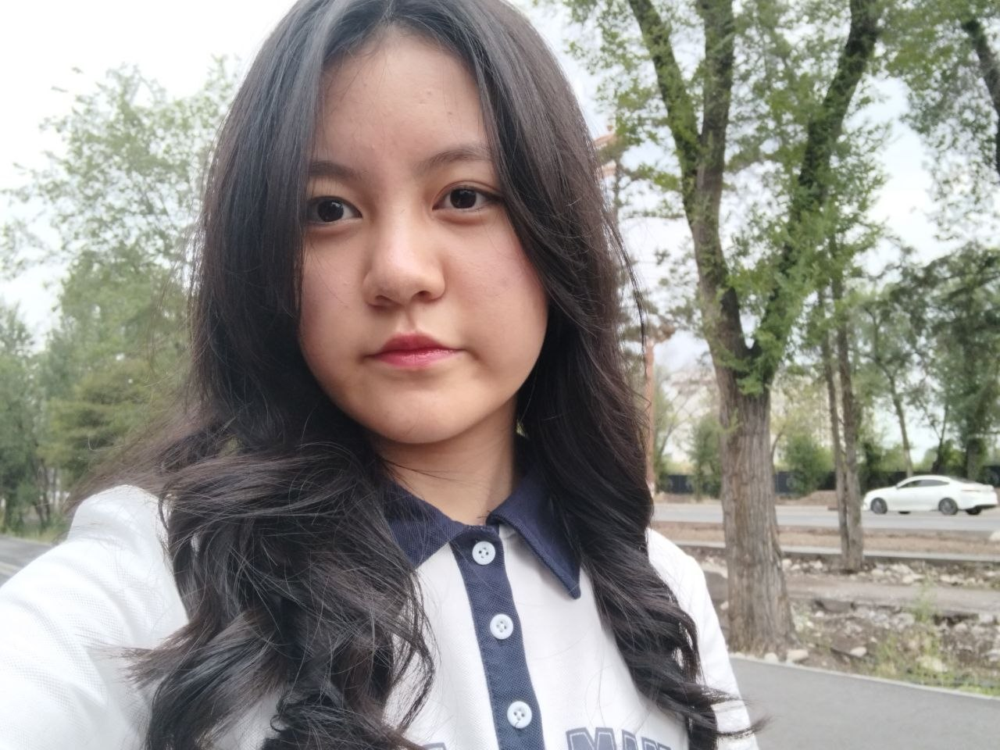
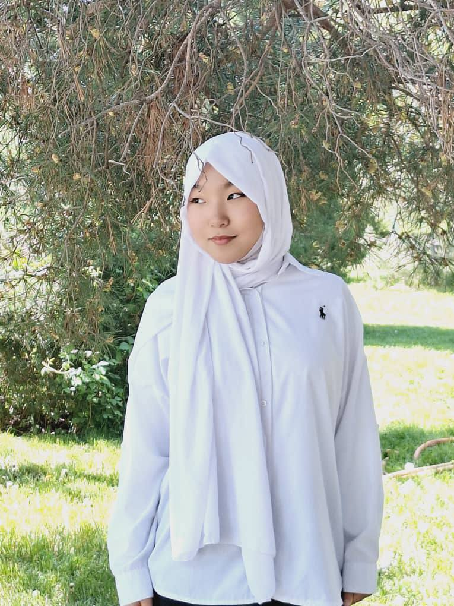
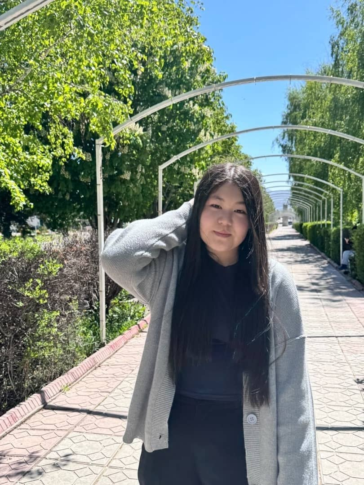
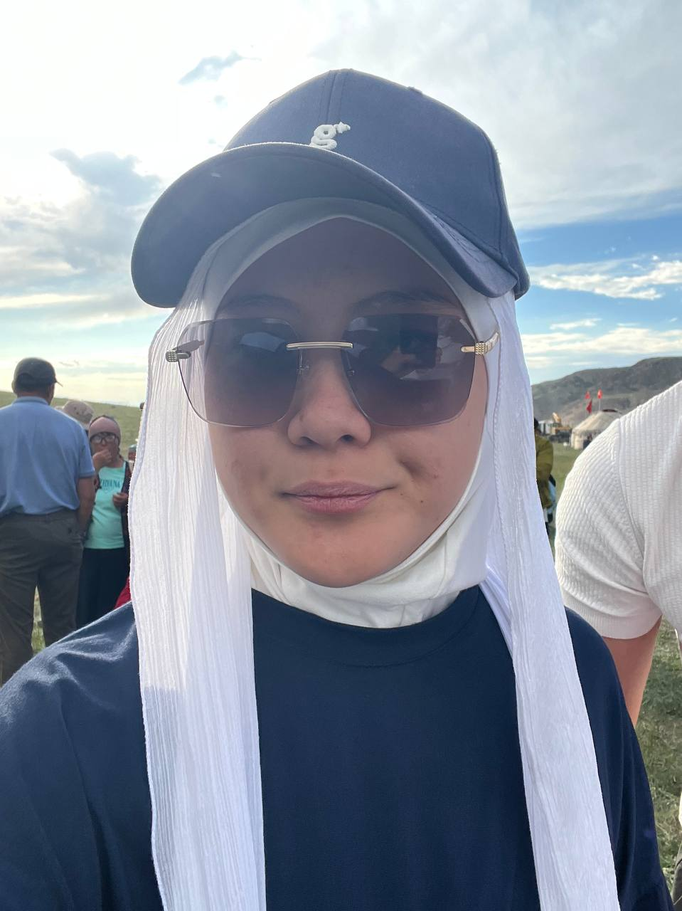

Механика и электроника
Конструкции, приводы, пайка, чтение схем. Собираешь первую платформу своими руками.
Приём открыт · Бишкек
Оборудование, компоненты и менторы — бесплатно. Приходи с 14 лет, опыт не нужен.
Возраст — от 14 лет. Других требований нет.
01 / направления
Конструкции, приводы, пайка, чтение схем. Собираешь первую платформу своими руками.
Программируешь поведение робота: моторы, датчики, прерывания, протоколы связи.
Одноплатные компьютеры, камера, Linux. Робот начинает «видеть» и принимать решения.
Навигация, карты, локализация, работа в команде над сложной платформой.
Ступень выбираешь сам. Можно начать с первой, можно сразу с той, что по силам.
02 / проекты
Команда готовится к республиканскому отбору по регламентам WRO/WRCC: сборка, отладка, прогоны на время.
Подробнее →Колёсный робот на Raspberry Pi с камерой. Цель — навигация без оператора: карта, локализация, объезд препятствий.
Подробнее →Направление предлагает сам участник. Клуб даёт стол, компоненты и ментора — остальное делает команда.
Подробнее →03 / события
04 / путь участника
RoboComm — бесплатный студенческий клуб. BIROK — организация, которая готовит менторов для международных соревнований и работает со школами на платной основе. Те, кто вырос в клубе, попадают в менторскую программу BIROK.
Взять направление в клубе05 / о клубе
RoboComm работает с августа 2024 года. Мы не занимаемся сборкой по готовым наборам: участник проходит путь от механики до ROS и собирает собственного робота. Внутренние соревнования — способ отобрать команду на республиканский отбор.
Клуб работает при поддержке BIROK и WE FUND. Вопросы партнёрства — birok@robocomm.kg

основатель

Разработчик

Техлид

SMM - специалист

Координатор клуба

Проектный менеджер

Ивент менеджер

Неопределено
06 / как устроен клуб
Клуб держат сами участники: студенты ведут занятия, организуют отборы и закупают компоненты. Ты не покупаешь курс — ты входишь в команду.
«Здесь никто не раздаёт готовые инструкции — зато всегда есть, у кого спросить.»
«Пришёл без опыта, через полгода паял платы и писал код для своего робота.»